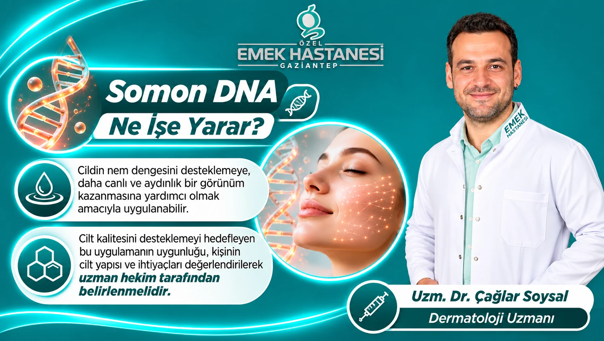

Cilt zamanla nemini, elastikiyetini ve doğal ışıltısını kaybedebilir. Güneş ışınları, çevresel faktörler, yaş alma ve yaşam tarzı gibi etkenler cildin daha yorgun ve mat görünmesine neden olabilir. Cilt kalitesini desteklemeyi amaçlayan uygulamalardan biri de son yıllarda estetik dermatoloji alanında ilgi gören Somon DNA uygulamasıdır.
Özel Emek Hastanesi Gaziantep Dermatoloji Uzmanı Uzm. Dr. Çağlar Soysal, Somon DNA uygulamasının kişiye uygunluğunun cilt yapısı ve ihtiyaçları değerlendirilerek belirlenmesi gerektiğini vurguluyor.
Somon DNA Nedir?
Somon DNA, estetik dermatoloji alanında kullanılan ve somon balığından elde edilen saflaştırılmış DNA türevlerini (polinükleotid veya PDRN içeren ürünleri) ifade etmek için kullanılan genel bir isimdir.
Bu ürünler, cilt dokusunun yenilenme süreçlerini desteklemeyi hedefleyen biyostimülan uygulamalar arasında değerlendirilir. Ciltte nem dengesi, elastikiyet ve doku kalitesi üzerinde olumlu etkiler oluşturabileceği düşünülmektedir.
Somon DNA uygulaması, cilde yeni bir DNA aktarılması veya kişinin genetik yapısının değiştirilmesi anlamına gelmez. Uygulamanın amacı, cildin doğal yenilenme süreçlerini desteklemektir.
Somon DNA Ne İşe Yarar?
Somon DNA uygulaması, uygun kişilerde cilt kalitesini desteklemek amacıyla değerlendirilebilir. Araştırmalarda öne çıkan potansiyel etkileri şunlardır:
- Cildin nem dengesini destekleyebilir: Daha nemli ve canlı bir cilt görünümüne katkı sağlayabilir.
- Cilt dokusunu iyileştirmeye yardımcı olabilir: Cilt yüzeyinin daha pürüzsüz görünmesini destekleyebilir.
- Elastikiyetin korunmasına katkı sağlayabilir: Cildin daha sıkı ve esnek görünmesini hedefleyen uygulamalar arasında yer alır.
- İnce çizgilerin görünümünü azaltmaya yardımcı olabilir: Özellikle cilt kalitesindeki değişimlerin hedeflendiği kişisel bakım planlarında değerlendirilebilir.
- Daha aydınlık bir görünümü destekleyebilir: Cildin genel görünümünün iyileştirilmesine katkıda bulunabilir.
Bu etkiler her kişide aynı düzeyde görülmeyebilir. Somon DNA uygulamasına ilişkin bilimsel çalışmalar umut verici olmakla birlikte, mevcut kanıtların henüz sınırlı olduğu ve daha kapsamlı araştırmalara ihtiyaç duyulduğu unutulmamalıdır.
Somon DNA Hangi Bölgelere Uygulanabilir?
Kullanılan ürünün özelliklerine ve kişinin ihtiyaçlarına bağlı olarak Somon DNA uygulaması farklı cilt bölgelerinde değerlendirilebilir.
En sık ele alınan bölgeler şunlardır:
- Yüz bölgesi
- Göz çevresi
- Boyun
- Dekolte bölgesi
- El sırtı
Her bölgenin cilt yapısı ve anatomik özellikleri farklıdır. Bu nedenle uygulanacak bölge, ürün ve yöntem dermatoloji uzmanının değerlendirmesiyle belirlenmelidir.
Somon DNA Uygulaması Nasıl Yapılır?
Somon DNA uygulaması, kullanılan ürünün talimatlarına göre genellikle cilt içine veya deri altına enjeksiyon yöntemiyle gerçekleştirilen bir işlemdir.
Uygulama öncesinde dermatoloji uzmanı tarafından cilt yapısı, beklentiler, mevcut cilt sorunları ve kişinin sağlık öyküsü değerlendirilir. İşlem bölgesi temizlenir ve gerekli görülürse lokal anestezik ürün kullanılabilir.
Ardından uygun ürün, belirlenen bölgelere ve tekniğe göre uygulanır. İşlemin süresi, uygulama alanına ve kullanılan yönteme göre değişebilir.
Seans sayısı ve seans aralıkları herkes için aynı değildir. Kişinin cilt ihtiyacına, kullanılan ürünün özelliklerine ve hekim değerlendirmesine göre kişisel bir uygulama planı oluşturulur.
Somon DNA Uygulamasının Yan Etkileri Var mı?
Her enjeksiyon işleminde olduğu gibi Somon DNA uygulamasında da bazı yan etkiler görülebilir. Uygulama bölgesinde geçici olarak:
- Kızarıklık
- Hafif şişlik
- Hassasiyet
- Morarma
- Küçük enjeksiyon kabarıklıkları
oluşabilir.
Daha ciddi reaksiyonlar veya enfeksiyon gibi komplikasyonlar da enjeksiyon işlemlerinde olası riskler arasındadır. Bu nedenle uygulamanın uygun sağlık koşullarında, yetkin sağlık profesyonelleri tarafından ve doğru ürün kullanılarak yapılması önemlidir.
İşlem öncesinde alerjiler, kullanılan ilaçlar, mevcut hastalıklar, gebelik veya emzirme durumu mutlaka hekimle paylaşılmalıdır.
Somon DNA Kimler İçin Uygun Olabilir?
Cildinin nem dengesini ve genel görünümünü desteklemek isteyen, cilt kalitesinde değişiklikler fark eden kişiler için Somon DNA uygulaması dermatolojik değerlendirme kapsamında ele alınabilir.
Ancak bu uygulama herkes için uygun değildir. Ciltte aktif enfeksiyon veya iltihap bulunması, ürün içeriğine karşı bilinen hassasiyet ve kişinin genel sağlık durumu gibi faktörler dikkate alınmalıdır.
Uygulamanın gerekli olup olmadığına ve kişinin beklentilerini karşılayıp karşılamayacağına dermatoloji uzmanı karar vermelidir.
Somon DNA Sonrası Nelere Dikkat Edilmelidir?
İşlem sonrasında hekimin önerilerine uyulması önemlidir. Genel olarak:
- Uygulama bölgesine gereksiz yere dokunulmamalıdır.
- Cilt, hekim tarafından önerilen şekilde temizlenmelidir.
- Güneşten korunmaya dikkat edilmelidir.
- Hekimin önerdiği süre boyunca yoğun egzersiz, sauna ve aşırı sıcak ortamlardan kaçınılmalıdır.
- Uygulama bölgesinde beklenenden fazla ağrı, artan kızarıklık, belirgin şişlik veya başka olağan dışı bir durum gelişirse sağlık kuruluşuna başvurulmalıdır.
İşlem sonrası bakım önerileri kullanılan ürüne ve kişinin cilt özelliklerine göre değişebilir.
Somon DNA Uygulamasında Uzman Değerlendirmesi Neden Önemlidir?
Cilt yapısı, yaş, ciltteki nem seviyesi, elastikiyet ve kişinin beklentileri birbirinden farklıdır. Bu nedenle her kişiye aynı uygulama planının yapılması doğru değildir.
Somon DNA uygulamasında kullanılacak ürünün içeriği, uygulama bölgesi, seans planı ve olası riskler dermatoloji uzmanı tarafından değerlendirilmelidir. Ayrıca bu uygulamanın cilt bakımının, güneşten korunmanın ve sağlıklı yaşam alışkanlıklarının yerine geçmediği bilinmelidir.
Özel Emek Hastanesi Gaziantep Dermatoloji Uzmanı Uzm. Dr. Çağlar Soysal, Somon DNA uygulamasının uygunluğunun kişinin cilt yapısı ve ihtiyaçları doğrultusunda değerlendirilmesi gerektiğini belirtiyor.